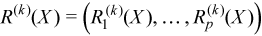
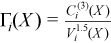

The following notations are used in the mathematical definitions and the description of the Intel® oneAPI Math Kernel Library Summary Statistics functions.
Matrix and Weights of Observations
For a random p-dimensional vector ξ = (ξ1,..., ξi,..., ξp), this manual denotes the following:
(X)i=(xij)j=1..n is the result of n independent observations for the i-th component ξi of the vector ξ.
The two-dimensional array X=(xij)n x p is the matrix of observations.
The column [X]j=(xij)i=1..p of the matrix X is the j-th observation of the random vector ξ.
Each observation [X]j is assigned a non-negative weight wj , where
The vector (wj)j=1..n is a vector of weights corresponding to n observations of the random vector ξ.
is the accumulated weight corresponding to observations X.
Vector of sample means
with
for all i = 1, ..., p.
Vector of sample partial sums
with
for all i = 1, ..., p.
Vector of sample variances
with ,
for all i = 1, ..., p.
Vector of sample raw/algebraic moments of k-th order, k≥ 1
 with
for all i = 1, ..., p.
Vector of sample raw/algebraic partial sums of k-th order, k= 2, 3, 4 (raw/algebraic partial sums of squares/cubes/fourth powers)
 with
with
for all i = 1, ..., p.
Vector of sample central moments of the third and the fourth order
with ,
for all i = 1, ..., p and k = 3, 4.
Vector of sample central partial sums of k-th order, k= 2, 3, 4 (central partial sums of squares/cubes/fourth powers)
with
for all i = 1, ..., p.
Vector of sample excess kurtosis values
with
for all i = 1, ..., p.
Vector of sample skewness values
with 
for all i = 1, ..., p.
Vector of sample variation coefficients
with
for all i = 1, ..., p.
Matrix of order statistics
Matrix Y = (yij)pxn, in which the i-th row (Y)i = (yij)j=1..n is obtained as a result of sorting in the ascending order of row (X)i = (xij)j=1..n in the original matrix of observations.
Vector of sample minimum values
, where
for all i = 1, ..., p.
Vector of sample maximum values
, where
for all i = 1, ..., p.
Vector of sample median values
, where
for all i = 1, ..., p.
Vector of sample median absolute deviations
, where with ,
for all i = 1, ..., p.
Vector of sample mean absolute deviations
,
where
with  ,
,
for all i = 1, ..., p.
Vector of sample quantile values
For a positive integer number q and k belonging to the interval [0, q-1], point zi is the k-th q quantile of the random variable ξi if P{ξi≤zi} ≥β and P{ξi≤zi} ≥ 1 - β, where
P is the probability measure.
β = k/n is the quantile order.
The calculation of quantiles is as follows:
j = [(n-1)β] and f = {(n-1)β} as integer and fractional parts of the number (n-1)β, respectively, and the vector of sample quantile values is
Q(X,β) = (Q1(X,β), ..., Qp(X,β))
where
(Qi(X,β) = yi,j+1 + f(yi,j+2 - yi,j+1)
for all i = 1, ..., p.
Variance-covariance matrix
C(X) = (cij(X))p x p
where
,

Cross-product matrix (matrix of cross-products and sums of squares)
CP(X) = (cpij(X))p x p
where
Pooled and group variance-covariance matrices
The set N = {1, ..., n} is partitioned into non-intersecting subsets
The observation [X]j = (xij)i=1..p belongs to the group r if j∈Gr. One observation belongs to one group only. The group mean and variance-covariance matrices are calculated similarly to the formulas above:
with ,
for all i = 1, ..., p,
where
,
for all i = 1, ..., p and j = 1, ..., p.
A pooled variance-covariance matrix and a pooled mean are computed as weighted mean over group covariance matrices and group means, correspondingly:
with
for all i = 1, ..., p,
,
for all i = 1, ..., p and j = 1, ..., p.
Correlation matrix
, where
for all i = 1, ..., p and j = 1, ..., p.
Partial variance-covariance matrix
For a random vector ξ partitioned into two components Z and Y, a variance-covariance matrix C describes the structure of dependencies in the vector ξ:
.
The partial covariance matrix P(X) =(pij(X))kxk is defined as
.
where k is the dimension of Y.
Partial correlation matrix
The following is a partial correlation matrix for all i = 1, ..., k and j = 1, ..., k:
, where
where
k is the dimension of Y.
pij(X) are elements of the partial variance-covariance matrix.
Sorted dataset
Matrix Y = (yij)pxn, in which the i-th row (Y)i is obtained as a result of sorting in ascending order the row (X)i = (xij)j = 1..n in the original matrix of observations.